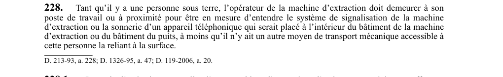

art-228-RSSM : présence opérateur poste extraction
Un article du wiki ⚖️ Recueil législatif
🌐 LegisQuébec · 📄 PDF officiel
Texte officiel : capture du PDF

🔗 Voir art. 228 RSSM dans le PDF (page 68)
Version : texte officiel du RSSM (RLRQ c. S-2.1, r. 14), à jour au 1er mai 2024 — Éditeur officiel du Québec
En bref
Tant qu'une personne est sous terre, l'opérateur de la machine d'extraction doit demeurer à son poste. Il s'agit d'une obligation.
- Sauf s'il existe un autre moyen de transport mécanique reliant cette personne.
- Tant qu'il y a une personne sous terre.
- Sauf si autre moyen de transport mécanique accessible.
- Lors d'opération manuelle, aucune autre tâche simultanée.
Voir aussi
- art. 226 : essai simultané freins à pignon · obligation : lorsqu'un frein à pignon est utilisé pour satisfaire aux exigences des articles 233 et 250, il doit être essayé conformément à l'article 225 ; s'il y en a plusieurs, tous doivent être essayés simultanément.
- art. 227 : vérification quotidienne interrupteurs machine extraction · obligation : le fonctionnement des interrupteurs évite-molette, anti-déversement et de limite inférieure et supérieure de parcours doit être vérifié par des essais au moins une fois par jour d'utilisation de la machine d'extraction.
- art. 229 : installation extraction air comprimé vapeur · obligation : une installation d'extraction à air comprimé ou à vapeur doit être munie d'un manomètre lisible du poste de commande, d'un interrupteur évite-molette commandé directement par le transporteur ou le contrepoids, d'un interrupteur de limite inférieure de parcours.
- art. 230 : régulateur étranglement interrupteurs limite parcours · obligation : les interrupteurs prévus aux paragraphes 2 et 3 de l'article 229 doivent actionner un régulateur par étranglement de l'échappement qui immobilise la machine avant que le transporteur, le contrepoids ou les attaches de câbles n'atteignent la molette ou tout obstacle.
- ⚖️ Loi habilitante : LSST
- ↑ Index du bloc : Engins miniers
Pages qui pointent ici (5)
- art-226-RSSM, essai simultané freins à pignon Recueil législatif
- art-227-RSSM, vérification quotidienne interrupteurs machine extraction Recueil législatif
- art-229-RSSM, installation extraction air comprimé vapeur Recueil législatif
- art-230-RSSM, régulateur étranglement interrupteurs limite parcours Recueil législatif
- RSSM - Engins miniers (art. 201-250) Recueil législatif